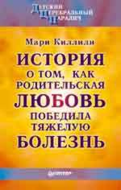

Наша библиотека:
-
Неутомимый наш ковчег. Опыт преодоления беды / Сост. С.Бейлезон. – М.: Нарния, 2007, 128 с.


-
Кэтрин Морис, "Услышать Голос Твой". История Триумфа Одной Семьи Над Аутизмом.(249 стр.)
-
"Обучение детей с помощью модификации поведения"
( основано на работе Ивара Ловааса)(63 стр.)
-
Глен Доман, "Гармоническое развитие ребенка".Как сделать ребенка физически совершенным и увеличить интеллектуальный потенциал.
(170 стр.)
-
"Начало пути". О тренингах "The Option Process" Б. и С. Кауфманов.Основная идея Кауфмана очень проста: счастлив ты или нет-зависит только от тебя.
(42 стр.)
-
"Детский церебральный паралич.
История о том, как родительская любовь победила тя-
желую болезнь",СПб: Питер Ком,1998. (288 стр.).Эта книга написана матерью, чья дочь от рождения была по-
ражена детским церебральным параличом. Рассказ о борьбе за здоровье адресован широкому кругу читателей, а тот,
кто сам столкнулся с подобными проблемами, найдет здесь ясную и убедительную
программу действий. Главное — любовь, участие и уверенность в окончательной победе над болезнью.

ВНИМАНИЕ! Для просмотра статей, отмеченных значком
 ,
необходим Adobe Acrobat или Adobe Acrobat Reader.
Получить Adobe Acrobat Reader бесплатно можно
здесь.
,
необходим Adobe Acrobat или Adobe Acrobat Reader.
Получить Adobe Acrobat Reader бесплатно можно
здесь.